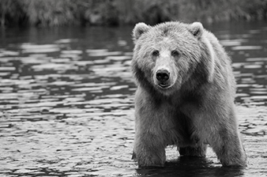
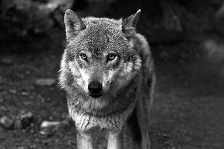

PROTECTED UNDER THE ESA HAVE BEEN REHABILITATED.
Scroll down to read about the restoration of three U.S. dwelling species that were saved by
the ESA.
BALD EAGLE
populations began to dwindle in the 1940s due to their consumption of fish contaminated
by DDT, a compound found in insecticides.
CURRENT POPULATION
19,578
IN 1978,
the Endangered Species Act protected bald eagles from all human disturbances. The bald
eagle was removed from the endangered species list and today flourishes in the wild.

GRIZZLY BEARS,
whose primary habitat is in the greater Yellowstone area, were deemed near extinction in
1975 and place under protection of the ESA.
PROTECTIONS
afforded to the grizzly under the ESA included prohibiting hunting of the species and
protecting habitat lands from further development. Although de-listed from endangered status in 2017, the
grizzly is still illegal to hunt.

GRAY WOLF
populations as early as 1900 faced hardship due to unregulated trapping and killing that left them almost extinct.
CURRENT POPULATION
15,000
ESA PROTECTION
in 1975 that outlawed the hunting of wolves led to an immediate rebound of the population. Although no longer still endangered, the matter of wolf hunting practices are a highly debated topic in conservation politics.